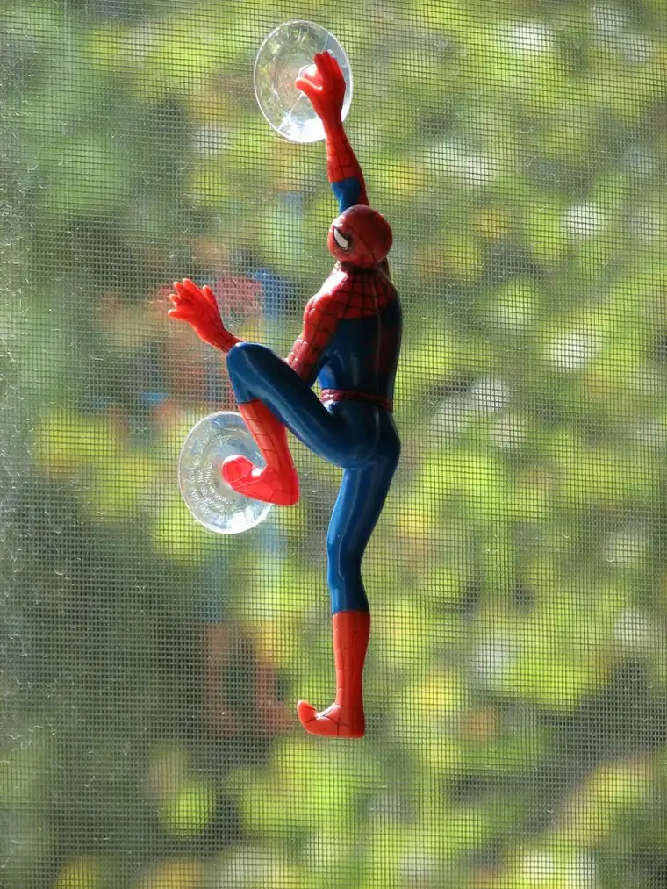

{kind=link}
This phrase comes into my consciousness fairly often. It happens especially in the summertime or on Saturdays, when I am often holed up with all five kids for a full day or more. Don’t get me wrong. I love my kids. But I tend to enjoy my job as a mother more when I can have them in increments. During the school week, I am afforded this luxury, and I try to plan my mornings so that I have enough energy built up in reserve to handle the after-school barrage of emotions and needs with as much grace as possible.
But when those long days come and cleaning can no longer take a backseat, I have my work cut out for me. I only hope that someday, one or two of my children become professional actors, because the dramatics that happen routinely around here need to be channeled somewhere besides our four walls. Oh, it gets heavy with emotion: the stomping, the crossing of arms, the gnashing of teeth. “Woe is us, who have to actually lift a finger to help our mother on a Saturday. How very unfair! Injustice! Isn’t it a free country?” My whining kids proceed to drag black, ominous clouds of weariness behind them as they slog through the afternoon, certain that they are in some kind of child prison. “Child labor is against the law!” they cry, hoping somehow to change my mind.
I’ve learned a thing or two over the past couple years. One of the most important lessons has been not to fall for it. They are kids. It’s their job to try to resist (at least a little), to not react pleasantly every time I ask for their help. In the past, I made the mistake of joining in the drama, fueling the ever-rising fire until I would end up the clear loser of the battle. I recognize that in my earlier parenting, I didn’t set up firm enough boundaries, and I’m paying the price now. Nevertheless, we parents are human. We’re allowed a few mistakes, too. But if we are so lucky to have one of those “aha!” moments that leads to a more harmonious way of living with our children (it can take years…), we can start from that day and move forward from there. It’s never too late to do better.
So these days, I employ much more patience and much less dramatics myself. It requires a lot of emotional work on my part to think things through, come up with the appropriate response, and not cave in to their antics (and trust me, it’s doubly hard when fatigue sets in). Most days, I see an improvement over my mothering of the past. But there are times when I can’t help but look at the Spiderman who crawls along our sliding-glass window, desperately looking for an escape, and think, “Hey, Buddy, mind if I join you for a while?”